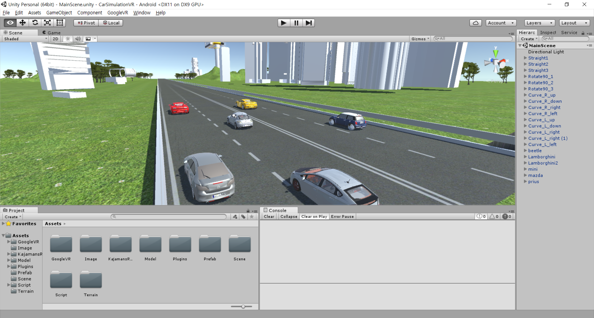

WEB & SERVER
Drug Dashboard
I developed this website in Seoul National University Hospital.
This is a dashboard used to easily analyze data about drugs.
It queries data from the OMOP CDM and visualizes it.
It uses a PostgreSQL database.
Back-end Server is developed with Node.js and Express.
Front-end Server is developed with Vue.js.
I used D3.js to draw charts.
The whole system is organized using Docker Compose.
This is a dashboard used to easily analyze data about drugs.
It queries data from the OMOP CDM and visualizes it.
It uses a PostgreSQL database.
Back-end Server is developed with Node.js and Express.
Front-end Server is developed with Vue.js.
I used D3.js to draw charts.
The whole system is organized using Docker Compose.
FlixTown
Chatting Website

ShareSpace
AppointMe
INFRASTRUCTURE
Cluster Network

Email Authenticator
ANDROID
Daily Capture
Visual Impairment VR
My Noti

UTILITY
stream-socket.io : Use stream through Socket.IO.
oqo : JavaScript Object Query Object
node-random-color : Random Color Generator
OTHERS
Driving Simulation
This is a simulation built with Unity.
I developed it as a R&E project in Sejong Science High School.
Logitech G29 Racing Wheel was used to control the car.
It was also available on Cardboard VR for realistic experience.
I developed it as a R&E project in Sejong Science High School.
Logitech G29 Racing Wheel was used to control the car.
It was also available on Cardboard VR for realistic experience.
